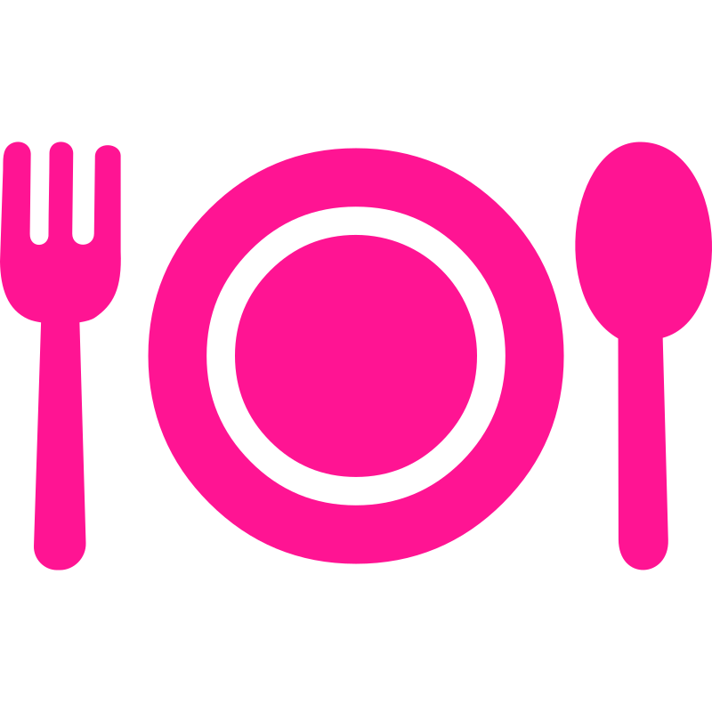
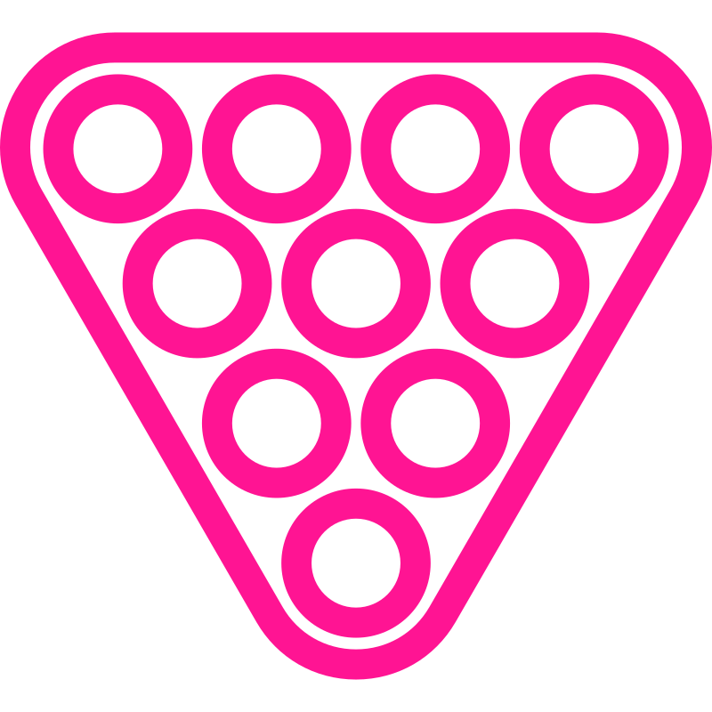

Das Kult-Café am Lindenauer Markt
Weitere Informationen finden Sie auch auf unserer Facebook-Seite.
Wir freuen uns auf Euren Besuch!


Weitere Informationen finden Sie auch auf unserer Facebook-Seite.